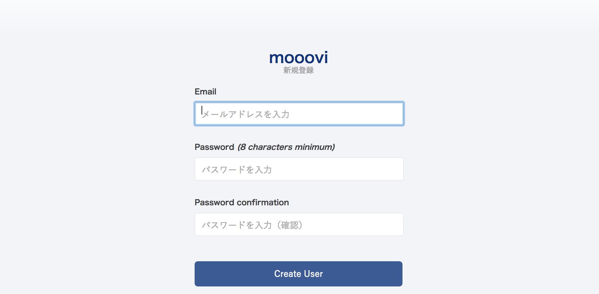

- 終了まであと10日
 大宅 誠人
大宅 誠人
大宅 誠人応用的な課題を解きながら、映画レビューサイトをさらに複雑なアプリケーションにしていきましょう。
ひと通り動くレビューサイトが出来たと思います。
この章はこのレビューサイトに機能を増やして、よりアプリケーションとしてのクオリティを上げていきます。
この章では少し応用的な課題が出てくるので、わからないときは調べながら進めていきましょう。
本章では新しくビューを追加するので、そのためのHTMLやCSSファイルが必要となります。本セクションでは、本格的に学習に入る前にこれらの必要なファイルの準備を行います。
以下のリンクから新しいHTML、CSSファイルの入っているzipファイルをダウンロードしましょう。
zipファイルを解凍し、以下のようになっていることを確認してください。
zipファイルを解凍できない場合はメンターにお知らせください。
上記のrails2-4フォルダの中の、以下の2つのファイルを置き換えます。
ダウンロードしたフォルダに入っていた残りのファイルはこのあと使うので、どこかに保存しておきましょう。
現在、レビューの評価がどこにも表示されていません。moooviではレビューの評価を星として表示します。
レビューの評価を表示させる画面はトップページと作品ページの2つです。

これを以下のように星で評価を表示できるようにしましょう。
星の数はそれぞれ画像が用意されており、以下のようにして表示することができます。
トップページであるindex.html.erb、作品ページであるshow.html.erbを確認しましょう。
1 2 3 4 5 6 7 8 9 10 11 12 13 14 15 16 17 18 19 20 21 22 23 24 25 26 27 28 29 30 31 32 33 |
<div id="main_cnt_wrapper">
<div id="yjContentsBody">
<div class="yjContainer">
<span class="yjGuid"><a id="yjContentsStart" name="yjContentsStart"></a><img alt="ここから本文です" height="1" src="http://i.yimg.jp/yui/jp/tmpl/1.1.0/audionav.gif" width="1"></span>
<div id="yjMain">
<article class="section">
<div class="container">
<header class="header header--section">
<h2 class="text-middle">
<i class="icon-movie color-gray-light"></i>新着作品
</h2>
</header>
<ul class="thumbnails thumbnail--movies row grid4 js-lazy-load-images js-my-check-stats" id="list-module">
<% @products.each do |product| %>
<li class="col">
<a href="/products/<%= product.id %>"><div class="thumbnail__figure" style="background-image:url(<%= product.image_url %>)"></div></a>
<div class="thumbnail__caption">
<h3 class="text-xsmall text-overflow" title="<%= product.title %>">
<%= product.title %>
</h3>
<p class="text-small">
<span class="rating-star">
<i class="star-actived rate-[ここに評価を表示]0"></i>
</span>
</p>
</div>
</li>
<% end %>
</ul>
</div>
</article>
</div>
<div id="yjSub">
|
星の数はi要素のクラスのrate-[ここに評価を表示]0と対応しています。[ここに評価を表示]には評価の数字（1~10）が入ります。各評価の星の数は以下の通りです。
| クラス名 | 星の数 |
|---|---|
| rate-10 |  |
| rate-20 | |
| rate-30 | |
| rate-40 | |
| rate-50 |  |
| rate-60 |  |
| rate-70 | |
| rate-80 |  |
| rate-90 | |
| rate-100 |
それぞれのhtml.erbファイルにおいて、rate-[ここに評価を表示]0の[ここに評価を表示]に評価の数値が入るようにしていきます。
作品ページでは、アソシエーションを用いることでコントローラーで定義している@productから関連するreviewsテーブルのレコードを全て取得しています。reviewsテーブルのレコードは、評価の数値が入るカラム、rateカラムを持っているので、それをそのまま取得し、先ほどの例の[ここに評価を表示]の部分で利用すれば良いでしょう。
1 2 3 4 5 6 7 8 9 10 11 12 13 14 15 16 17 18 19 20 21 22 23 24 25 26 27 28 29 30 31 32 33 34 35 36 37 38 39 40 41 42 43 44 |
<div id="main_cnt_wrapper">
<div id="yjContentsBody">
<div class="yjContainer">
<span class="yjGuid"><a id="yjContentsStart" name="yjContentsStart"></a><img alt="ここから本文です" height="1" src="http://i.yimg.jp/yui/jp/tmpl/1.1.0/audionav.gif" width="1"></span>
<div id="yjMain">
<article class="section">
<div class="container">
<header class="header header--section">
<h2 class="text-middle">
<i class="icon-movie color-gray-light"></i><%= @product.title %>
</h2>
</header>
<p style="text-align: center">
<img src="<%= @product.image_url %>" alt="<%= @product.title %>">
</p>
<div style="text-align: right">
<a href="/products/<%= @product.id %>/reviews/new">この作品を投稿する</a>
</div>
<header class="header header--section">
<h2 class="text-middle">
<i class="icon-movie color-gray-light"></i>みんなのレビュー
</h2>
</header>
<ul style="padding: 0">
<% @product.reviews.each do |review| %>
<li style="border-bottom: dotted 1px">
<div class="thumbnail__caption">
<h3 class="text-xsmall text-overflow" title="<%= review.nickname %>">
<%= review.nickname %>
</h3>
<p class="text-small">
<span class="rating-star"><i class="star-actived rate-<%= review.rate %>0"></i></span>
</p>
<p>
<%= review.review %>
</p>
</div>
</li>
<% end %>
</ul>
</div>
</article>
</div>
<div id="yjSub">
|
作品詳細ページで、星がきちんと表示されていることを確認しましょう。
トップページに表示されている作品については、その作品についたレビュー全ての評価の平均を表示しましょう。
whereメソッドやアソシエーションを利用してDBから複数のレコードをインスタンスとして取得した場合、取得した配列はActiveRecord Relationクラスに属します。
1 2 |
products = Product.all
products.class #=> ActiveRecord::Relation::ActiveRecord_Relation_Product
|
※classメソッドを利用すると、利用したインスタンスが属するクラスを知ることができます。(インスタンス・メソッド/クラス・メソッドの区分で言うクラス・メソッドではありません。classというメソッドです。)
ActiveRecord Relationクラスには、whereを始めとして複数のメソッドが準備されているため、続けてメソッドを実行することができます。
1 2 |
#productsテーブルから最新の投稿を5件取得する
products = Product.order("id DESC").limit(5)
|
これは、複数のレコードのインスタンスが格納されている配列のようなものです。なので、配列クラスのメソッドを利用することができます。
1 2 3 4 5 6 |
#productsテーブルから最新の投稿を5件取得する
products = Product.order("id DESC").limit(5)
#productのtitleカラムの値を出力する処理を、eachメソッドで行う
products.each do |product|
puts product.title
end
|
なお、whereメソッドやアソシエーションで、DBに当てはまるレコードが存在しない場合、返り値は空の配列になります。
averageメソッドは、ActiveRecord_Relationクラスのメソッドです。averageメソッドは、averageメソッドを利用するインスタンス取得先のテーブルのカラムをシンボル型で引数にとります。その値の平均を、小数点ありの状態で返してくれます。
例えば、生徒の得点を記録するscoreカラムを持ったstudentsテーブルと関連するStudentクラスがあったとします。scoreカラムの平均を求めるには、以下のようにします。
1 2 3 |
users = Student.all
users.average(:score)
#=> 小数点まで含んだ平均点
|
小数点ありの数字クラスのインスタンスが利用できます。利用した数字の小数点以下を四捨五入します。
1 2 3 4 5 |
10.4.round
#=> 10
10.5.round
#=> 11
|
例えばトップページのビュー(index.html.erb)で以下のようにすると、各作品についてレビューの個数を取得することができますね。
1 2 3 4 5 |
<% @products.each do |product| %>
#（中略）
<%= product.reviews.count %>
#（中略）
<% end %>
|
1.で作業した内容と似ていますが、今回eachメソッドを利用しているのは作品の配列です。作品の平均評価は、作品のインスタンスから直接取得することはできません。では、全ての評価の平均を表示するにはどうすれば良いでしょうか。
1 2 |
ary = []
ary.present? #=> false
|
作品一覧ページで星がきちんと表示されていることを確認しましょう。

2.までの作業で、productの平均評価を表示することができました。しかし、ビューファイルに長いロジックを書いてしまうとコードが読みづらくなってしまい、あとで管理が大変なので避けたほうが良いでしょう。そこで、この処理をまとめてインスタンスメソッドにします。
今回こちらのメソッドを利用しているのはProductクラスのインスタンスです。そこで、上記の処理はProductクラスのインスタンス・メソッドとして定義します。
インスタンスメソッドを利用するインスタンス自身のことです。例えば以下のようなコードがあった場合、3行目の式におけるレシーバはstrです。
1 2 3 |
str = "3"
#以下の式のレシーバはstr
str.to_i #=> 3
|
インスタンスメソッドの中でselfと書くと、そのメソッドを利用したレシーバ自身が代入された変数のように扱うことができます。
Integerクラスに定義されているインスタンスメソッド、odd?を例に考えてみましょう。
odd?は
レシーバが奇数かどうかを判定してtrueかfalseを返してくれるインスタンスメソッドです。判定のためにはレシーバを利用した式が必要です。なので、odd?を自分で作るとすれば、以下の例のような実装になると思います。selfを使ってレシーバ自身をメソッドの中で利用しています。
1 2 3 4 5 6 7 8 9 10 |
class Integer
def odd?
if self % 2 == 1
return true
else
return false
end
end
end
2.odd? #=> false
|
上記の例では、レシーバである2がodd?メソッドの中でselfに代入され、判定が行われた結果返り値がfalseになっています。
今回index.html.erbに記述した処理をそのままProductクラスに移動しただけではエラーが起きてしまいます。そこで、selfを利用しレシーバ自身であるproductをインスタンス・メソッドの中に呼んであげます。
1 2 3 4 5 6 7 |
class Product < ActiveRecord::Base
has_many :reviews
def review_average
self.reviews.average(:rate).round
end
end
|
さらに、selfは実は省略することが可能です。上記の式を省略すると、以下のようになります。
1 2 3 4 5 6 7 |
class Product < ActiveRecord::Base
has_many :reviews
def review_average
reviews.average(:rate).round
end
end
|
だいぶスッキリとした式になりましたね。
続いて、定義したメソッドを実際にビューで利用します。
1 2 3 4 5 6 7 8 9 10 11 12 13 14 15 16 17 18 19 20 21 22 23 24 25 26 27 28 29 30 31 32 33 34 35 36 37 38 39 |
<div id="main_cnt_wrapper">
<div id="yjContentsBody">
<div class="yjContainer">
<span class="yjGuid"><a id="yjContentsStart" name="yjContentsStart"></a><img alt="ここから本文です" height="1" src="http://i.yimg.jp/yui/jp/tmpl/1.1.0/audionav.gif" width="1"></span>
<div id="yjMain">
<article class="section">
<div class="container">
<header class="header header--section">
<h2 class="text-middle">
<i class="icon-movie color-gray-light"></i>新着作品
</h2>
</header>
<ul class="thumbnails thumbnail--movies row grid4 js-lazy-load-images js-my-check-stats" id="list-module">
<% @products.each do |product| %>
<li class="col">
<a href="/products/<%= product.id %>"><div class="thumbnail__figure" style="background-image:url(<%= product.image_url %>)"></div></a>
<div class="thumbnail__caption">
<h3 class="text-xsmall text-overflow" title="<%= product.title %>">
<%= product.title %>
</h3>
<p class="text-small">
<% if product.reviews.present? %>
<span class="rating-star">
<i class="star-actived rate-<%= product.review_average %>0"></i>
</span>
<% else %>
<span class="rating-star">
<i class="star-actived rate-0"></i>
</span>
<% end %>
</p>
</div>
</li>
<% end %>
</ul>
</div>
</article>
</div>
<div id="yjSub">
|
この段階で、2. の作業終了時と同じように平均の値が星の数で表示されていれば成功です。
次にランキング機能を実装しましょう。見本となるmoooviのサイトを確認してみてください。トップページの右側に投稿ランキングが表示されていると思います。
mooovi(http://mooovi.tech-camp.in/)
このランキングは投稿数が多いものを上から順にトップ5で表示しています。ランキングを取得して表示させてみましょう。
ランキングの条件は「投稿数の多いものから順番に」と「上から5件取得」の2つです。ランキングが表示されるのはすべての画面です。つまり、すべてのコントローラーのアクションでランキングの情報を取得しなければなりません。
こういった場合、ランキングを取得する処理をbefore_actionで記述しましょう。
あるコントローラのすべてのアクションで実行の前に共通の処理を行いたいときがあります。before_actionを使用すると全てのアクションが実行される前に指定したメソッドを呼び出すことができるようになります。
1 2 |
class コントローラ名 < ApplicationController
before_action :処理させたいメソッドの名前
|
例えば、ProductsControllerという名前のコントローラで、毎回インスタンス変数@page_titleに「作品ページ」という文字列を代入する処理を各アクションの前に実行したいとします。
1 2 3 4 5 6 7 8 9 10 11 |
class ProductsController < ApplicationController
before_action :configure_title
def index
@products = Product.all
end
def configure_title
@page_title = '作品ページ'
end
end
|
このソースコードではProductsControllerのindexアクションが呼ばれる前に、configure_titleが実行されます。さらにindexアクションだけでなく、ProductsControllerの他すべてのアクションでconfigure_titleが最初に呼ばれます。
before_actionの特徴
① before_actionを書いたコントローラのすべてのアクションの前に処理を行える
② before_actionを書いたコントローラで共通の処理を行える
ではどのコントローラにbefore_actionを書けばいいでしょうか。今回ランキングを表示するのはいまのところはすべてのビューです。よって、ProductsControllerとReviewsControllerの2つに書けばいいのですがこれら2つのコントローラはRankingControllerを継承しています。
コントローラは別のコントローラを継承することができます。継承をすると継承元のコントローラの持つメソッドや特徴を引き継ぐことができます。
コントローラの継承はコントローラの定義で以下のように書きます。
1 2 |
class コントローラ < 継承元のコントローラ
end
|
例えば、AnimalControllerを継承したDogControllerをつくる場合は以下のようになります。
1 2 |
class DogController < AnimalController
end
|
このとき、AnimalControllerでbefore_actionを以下のように定義しているとします。
1 2 3 4 5 6 7 |
class AnimalController < ApplicationController
before_action :say_hello
def say_hello
puts "Hello Animal"
end
end
|
すると、AnimalControllerを継承したDogControllerのすべてのアクションの前にもbefore_actionのsay_helloメソッドが呼ばれます。
1 2 3 4 5 6 7 |
class DogController < AnimalController
def show
@dog = Dog.find(params[:id])
end
end
# => showアクションの前にsay_helloが呼ばれる
|
すべてのコントローラで共通のbefore_actionを定義したい場合はApplicationControllerに記述します。これは、すべてのコントローラ(ApplicationController以外)がApplicationControllerを継承しているためです。
今回はRankingControllerにランキングを取得するbefore_actionを記述しましょう。
RankingControllerを作らず直接ApplicationControllerを作ればいいのでは？、と思われるかもしれませんが、あくまでランキングを表示したいのはトップページと作品の個別ページです。この後マイページを実装していくのですが、ApplicationControllerに記載するとマイページにもランキングが表示されてしまいます。よって、RankingControllerを作成し、ランキングを表示させたいReviewsControllerとProductsControllerを継承させています。
「投稿数が多い順に」という部分はこのあと実装するので、今回はProductsテーブルに入ってる作品を5件取得して変数@rankingに入れておきましょう。
1 2 3 4 5 6 7 |
class RankingController < ApplicationController
layout 'review_site'
before_action :ranking
def ranking
@ranking = Product.limit(5)
end
end
|
limitメソッドもorderメソッドと同じように、allメソッドを省略することができます。
では、先ほど定義した変数@rankingをビューに反映させましょう。どのファイルにランキングのHTMLが記述されているでしょうか。ランキングの情報を取得するbefore_actionはRankingControllerに実装しました。RankingControllerの2行目を見てみましょう。
1 2 3 4 5 6 7 |
class RankingController < ApplicationController
layout 'review_site'
before_action :ranking
def ranking
@ranking = Product.limit(5)
end
end
|
layout 'review_site'という記述がありますね。これはビューのレイアウトファイルを指定するものです。
レイアウトファイルとはapp/views/layouts/の下に入っているHTMLファイルです。レイアウトファイルはURLにアクセスして対応するコントローラが呼ばれたあと、最初に表示されるHTMLのことです。実は今まで修正していたshow.html.erbなどのファイルはレイアウトファイルの中に呼び出されています。
コントローラ内でlayout 'レイアウトファイル名'と書くと、そのコントローラでのアクションが呼ばれたあと表示するビューのレイアウトファイルを指定できます。
1 2 3 4 5 6 7 |
class MovieController < ApplicationController
layout 'movie'
def index
@movies = Movie.all
end
end
|
例えばこのように指定すると、MovieControllerのindexアクションが呼ばれたときに表示されるレイアウトはmovie.html.erbとなります。
なにも指定しないとレイアウトファイルはapplication.html.erbとなります。
今回、RankingControllerではlayout 'review_site'が指定されているので表示されるレイアウトファイルはreview_site.html.erbに なります。
ではreview_site.html.erbを開いてみましょう。
review_site.html.erbの29行目を見てみてください。
29 |
<%= yield %>
|
この<%= yield %>は外部のHTMLファイルを読み込むためのerb記法です。ここに今まで修正していたshow.html.erbなどのHTMLがアクションごとに差し込まれます。
では、review_site.html.erbを修正して、ランキングが表示されるようにしましょう。
1 2 3 4 5 6 7 8 9 10 11 12 13 14 15 16 17 18 19 20 21 22 23 24 25 26 27 28 29 30 31 32 33 34 35 36 37 38 39 40 41 42 43 44 45 46 47 48 49 50 51 52 53 54 55 56 57 58 59 60 61 62 63 64 65 66 67 |
<!DOCTYPE html>
<html class="pc" lang="ja" xmlns:fb="http://ogp.me/ns/fb#" xmlns:og="http://ogp.me/ns#">
<head>
<meta charset="utf-8">
<title>映画レビューサイト</title>
<link href='http://fonts.googleapis.com/css?family=Signika:700,300,400,600' rel='stylesheet' type='text/css'>
<%= stylesheet_link_tag "application", media: "all", "data-turbolinks-track" => true %>
<%= javascript_include_tag "application", "data-turbolinks-track" => true %>
<%= csrf_meta_tags %>
</meta>
</head>
<body class="yj950-2">
<div id="wrapper">
<div id="yjContentsHeader">
<nav class="globalnav">
<div class="globalnav__menu">
<ul class="gmenu">
<li class="logo" style="float: left">
<a href="/">mooovi</a>
</li>
<li class="entry_button" style="float: right">
<a href="/products/search">投稿する</a>
</li>
</ul>
</div>
</nav>
</div>
<div class="bgcolor-white pt1em pb1em" id="contents">
<%= yield %>
<aside class="section">
<h4 class="text-small hr-bottom--thin no-space-bottom">
<i class="icon-crown color-gray-light"></i>投稿ランキング
</h4>
<ul class="listview listview--condensed text-small">
<% @ranking.each.with_index(1) do |product, i| %>
<li data-cinema-id="346394">
<a href="/products/<%= product.id %>">
<div class="box">
<div class="box__cell w40 align-center">
<p class="label bgcolor-gray-lighter align-center">
<%= i %>
</p>
</div>
<div class="box__cell pl1em">
<p class="text-xsmall no-space">
<%= product.title %>
</p>
<img src="<%= product.image_url %>" alt="">
</div>
</div>
</a>
</li>
<% end %>
</ul>
</aside>
</div>
</div>
</div>
</div>
<div class="copyright">
Copyright (C) 2015 XXX Corporation. All Rights Reserved.
</div>
</div>
</div>
</body>
</html>
|
@rankingはActiveRecordRelationクラスのインスタンスです。なので、配列クラス(Arrayクラス)に定義されているメソッドを利用することができます。ランキングの変数@rankingに対して繰り返し処理を行って表示をしています。
先ほど編集していただいた３６行目の内容に、each.with_index という記述がありました。こちらでは、eachメソッドに with_indexメソッドをあわせて使っています。 eachメソッドと with_indexメソッドを併用すると、要素の数だけブロックを繰り返し実行し、繰り返しごとに | で囲われている部分の i に番号が入ります。デフォルトでは、iには0から入ります。今回は with_index(1)と引数を渡した事で、1から番号が入りました。
1 2 3 4 5 6 7 8 9 10 11 12 13 14 15 16 17 18 19 20 21 22 23 24 25 |
array = ["abe", "takahashi", "hirata"]
array.each.with_index do |name, i|
puts i
puts name
end
#=>(実行結果)
0
abe
1
takahashi
2
hirata
array.each.with_index(5) do |name, i|
puts i
puts name
end
#=>(実行結果)
5
abe
6
takahashi
7
hirata
|
ReviewControllerで取得したランキングの情報@rankingは今はProductsテーブルから5件取得しているだけです。ランキングとして、レビューの投稿数が多い作品を5件取得しましょう。
ここはActiveRecordを上手く使わないと実装できません。必要な処理は以下です。
① Reviewsテーブルのレコードをproduct_idごとにまとめて、数の多い5件を取得する
② 取得した5件のReviewsテーブルのproduct_idを取得する
③ 取得したproduct_id(5件分)と同値のidを持つproductsテーブルのレコードをそれぞれ取得する
①の「Reviewsテーブルのレコードをproduct_idごとにまとめて、数の多い5件を取得する。」がもっとも難しい処理です。ここで考えてみましょう。Reviewモデルはどの作品のレビューかわかるようにカラムとしてproduct_idを持っています。レビューの投稿数が多いとはつまり、product_idが同じReviewsテーブルのレコードの数が多い、ということになります。
そこでまずは、Reviewsテーブルのレコードをproduct_idでまとめましょう。あるテーブルを特定のカラムでまとめるにはgroupメソッドを使います。
groupメソッドはテーブルのレコードを指定したカラムでまとめることができます。以下のように使います。
1 |
モデル.group(カラム名)
|
groupメソッドを使うと出力は以下のようになります。
1 2 3 4 5 |
Review.group(:product_id)
Review Load (10.5ms) SELECT `reviews`.* FROM `reviews` GROUP BY product_id
=> [#<Review id: 1, nickname: "まいき", rate: 1, review: "おもしろい", product_id: 21, created_at: "2014-11-05 16:03:39", updated_at: "2014-11-05 16:03:39", user_id: 4>,
#<Review id: 3, nickname: "えいちゃん", rate: 10, review: "感動した！また見たい", product_id: 22, created_at: "2014-11-05 16:03:39", updated_at: "2014-11-05 16:03:39", user_id: 4>,
#<Review id: 13, nickname: "ごとう", rate: 10, review: "思っていたより良かった", product_id: 23, created_at: "2014-11-05 16:03:39", updated_at: "2014-11-05 16:03:39", user_id: 4>
|
groupメソッドを使うと、指定したカラムでレコードがまとめられます。まとめられたレコードの内、idが一番小さいレコードの１件だけが表示されていますが、プログラムが実行されている裏側ではすべてのレコードが指定したカラムでまとめられています。現在は、それぞれのまとまりが具体的に何個あるのかはわかりません。

この状態でcountメソッドを使うとgroupメソッドでまとめられたレコードの数が取得できます。
countメソッドは配列などの要素数を返すメソッドです。groupメソッドに続けて使うとまとめられたそれぞれのレコードの数が取得できます。
1 2 |
Review.group(:product_id).count
=> {21=>2, 22=>1, 23=>4}
|
ハッシュが返ってきているのがわかると思います。このハッシュのキーはgroupメソッドで指定したカラムの値です。この例ではproduct_idになります。ハッシュの値はgroupメソッドでまとめられたレコード数です。
例ではproduct_idが21のレコードが2つ、product_idが22のレコードが1つ、product_idが23のレコードが4つということになります。
この状態で、レコード数でソートしたいですね。ソートにはorderメソッド使います。
モデル.group(カラム名).countは先ほど見たようにハッシュが返ってくるのでcountメソッドより前にorderメソッドを使いましょう。
1 2 |
Review.group(:product_id).order('product_id DESC').count
=> {23=>4, 22=>1, 21=>2}
|
この書き方ではproduct_idでソートされていますが、レコードの数ではソートされていません。groupメソッドでまとめたレコードの数でソートするには以下のように書きます。
1 2 |
Review.group(:product_id).order('count_product_id DESC').count(:product_id)
=> {23=>4, 21=>2, 22=>1}
|
countメソッドの引数にカラム名を指定することができます。するとorderメソッドでcount_カラム名でのソートが可能となります。これはそのカラムを持つレコードの数でソートするという意味です。
つまり上の例では、product_idでまとめたレコードをレコード数でソートして、カラム名とレコード数のハッシュで返す、という処理になっています。
取得したいのは5件なので、limit(5)を付け加えます。limitメソッドは複数のレコードの配列のような形であるActiveRecord::Relationに対するメソッドです。count(:product_id)の時点ではハッシュになっているため、その後に付け加えるとハッシュに対してlimitメソッドを実行することになりエラーが起こります。そのため、その直前に付け加え、以下のようにします。
1 2 |
Review.group(:product_id).order('count_product_id DESC').limit(5).count(:product_id)
=> {23=>4, 21=>2, 22=>1}
|
product_idでまとめたレコードをレコード数でソート
ハッシュはkeysというメソッドを持っています。これはハッシュのキーだけを取り出して配列として返すメソッドです。
1 2 |
Review.group(:product_id).order('count_product_id DESC').limit(5).count(:product_id).keys
=> [23, 22, 21]
|
カラム名とレコード数のハッシュで返す
以上でproduct_idの配列を投稿数が多い順に取得できました。
product_idの配列からidに該当するProductsテーブルのレコードを取得するにはどうすればいいでしょうか。
まず、思いつくのはwhereメソッドですね。whereメソッドはカラムと値を指定して、指定した値のカラムを持つレコードを取得します。このとき、渡す値は配列でも問題ありません。
そこで、Productsテーブルのidの配列idsを使ってwhereしてみます。
1 2 3 4 5 |
ids = [1, 2, 3] # product_idの配列
products = Product.where(id: ids)
=> [#<Product id: 1, title: "美女と野獣">,
#<Product id: 2, title: "アオハライド">,
#<Product id: 3, title: "ホビット 決戦のゆくえ">]
|
これで該当するidの値がすべて取得できました。
しかし、ここで１つ問題があります。それは取得したレコードの順番です。
以下のような配列idsでwhereしたとき、レコードはどのような順番で取得できるでしょうか。
1 2 3 4 5 |
ids = [3, 1, 2] # Productsテーブルのidの配列
products = Product.where(id: ids)
=> [#<Product id: 1, title: "美女と野獣">,
#<Product id: 2, title: "アオハライド">,
#<Product id: 3, title: "ホビット 決戦のゆくえ">]
|
出力結果に注目してください。配列idsを上のids = [1, 2, 3]とした場合と、いまのids = [3, 1, 2]の出力結果は同じです。これはwhereで値を配列にした場合、並びがid順になってしまうためです。
せっかくProductsモデルのidをレビューの投稿が多い順に取得したのに、これでは意味がありません。
1 2 3 |
=> [#<Product id: 3, title: "ホビット 決戦のゆくえ"?,
#<Product id: 1, title: "美女と野獣">,
#<Product id: 2, title: "アオハライド">]
|
1 2 3 |
=> [#<Product id: 1, title: "美女と野獣">,
#<Product id: 2, title: "アオハライド">,
#<Product id: 3, title: "ホビット 決戦のゆくえ">]
|
この問題を解決するためにmapメソッドを使用します。
mapメソッドは配列オブジェクトのインスタンスメソッドです。mapオブジェクトは配列の中身を１つずつ取り出してブロックという構文を繰り返し実行します。そして、ブロックの返り値を集めた新しい配列を作成します。
mapメソッドは配列オブジェクトに対して以下のように使用します。
1 2 3 |
配列オブジェクト.map {|ele| ブロックの処理}
# eleには配列の要素が１つずつ代入される
# ブロックの処理は配列の要素の数だけ繰り返し実行される
|
具体的な例を見ていきましょう。
配列に入っている全ての数値を2乗した新しい配列を取得したい場合、mapを使うと以下のように書けます。
1 2 3 4 |
numbers = [2, 5, 9]
squares = numbers.map {|number| number * number}
p squares
=> [4, 25, 81]
|
ちゃんと配列numbersの各値が2乗された数値が配列squaresに代入されています。
これはmapメソッドによって以下のように処理が行われたためです。

mapメソッドを使うと配列オブジェクトの各要素を使って新しい配列を生成することができます。product_idの配列に対してmapメソッドを使い、Productsテーブルからレコードを取得するのは以下のような方法になります。
1 2 3 4 5 |
ids = [3, 1, 2] # Productsテーブルのidの配列
products = ids.map {|product_id| Productsテーブルからidがproduct_idのレコードを取得する}
=> [#<Product id: 3, title: "ホビット 決戦のゆくえ">,
#<Product id: 1, title: "美女と野獣">,
#<Product id: 2, title: "アオハライド">]
|
mapメソッドを使うと順番はそのままでProductsテーブルからレコードを取得することができます。こちらのブロックの処理ではfindメソッドを使い、Productsテーブルからidがproduct_idのレコードを一本ずつ取得しましょう。
では、これらをヒントにランキング機能を実装しましょう。
画面右側に、ランキング機能が実装されていることを確認ましょう。

いまのmoooviにはユーザーという概念がありません。自分で書いたレビューをあとで見られるように、サインアップ画面をつくってユーザーを生成するようにしましょう。
サインアップ画面とユーザーを作るには、PicTweetでも使ったgemのdeviseを利用しましょう。
まずはdeviseのgemをインストールする必要があります。
50 |
gem 'devise'
|
1 2 3 |
$ pwd
#/Users/ユーザー名/projects/moooviであることを確認
$ bundle install
|
問題なくdeviseのgemがインストールできたらdeviseのセットアップをしましょう。
まずは、deviseを使うのに必要なファイルを生成します。
打ち間違えに注意しましょう
1 |
$ rails g devise:install
|
次にdeviseのサインアップやログインのviewファイルを生成します。
打ち間違えに注意しましょう
1 |
$ rails g devise:views
|
これでdeviseのviewファイルが生成できました。以下のようにapp/viewsのディレクトリの下にdeviseというディレクトリが生成されていれば成功です。
deviseで生成されるファイルのうち2つのファイルを準備のときにダウンロードしたrails2-4フォルダにあるファイルと置き換えましょう。
ダウンロードしたフォルダを消してしまった人は以下のリンクからもう一度ダウンロードしてください。
置き換えるファイルは以下の2つのファイルです。
削除するファイル(mooovi)
新しく置き換えるファイル(ダウンロードしたrails2-4)
削除するファイル(mooovi)
新しく置き換えるファイル(ダウンロードしたrails2-4)
あとはユーザーモデルの生成を行えばサインアップ機能が実装できます。ユーザーモデルの作成にはターミナルでdeviseのコマンドrails g deviseコマンドを使います。
まずはdeviseを利用してuserモデルを作成します。
打ち間違えに注意しましょう
1.deviseのファイルをインストールするで間違いなくrails g devise:installコマンドを実行してから以下のコマンドを実行してください
1 |
$ rails g devise user
|
正常に実行できたらユーザーモデル作成のためのマイグレーションファイルが生成されるのでこれを実行しましょう。
1 |
$ bundle exec rake db:migrate
|
1 2 3 4 5 6 |
# サーバーの立ち上がっているターミナルの画面に移動して
# サーバーの停止コマンド「control + c」
#####
# サーバーの停止
#####
$ rails s
|
ユーザーモデルが作成できたらブラウザでhttp://localhost:3000/users/sign_upにアクセスしてユーザーの作成画面に遷移するか確かめてみましょう。
新規登録画面

上記のようなデザインではなく、見た目が崩れてしまっている場合は以下の操作をしてください。
Finderで現在作成中のアプリケーションが存在するディレクリに移動します。
その中のtmpというフォルダの中のcacheというフォルダをゴミ箱に入れてください。
削除した後に、サーバーを再起動し、もう一度上記の画像のようなデザインになっているか確認してみましょう。
ユーザーの登録ができるようになりました。しかしこの状態では既存のユーザーでログインしたり、アカウントを切り替えることができません。そこで、サインアウト、ログインができるようにしましょう。機能はすでにdeviseで実装できています。
ログインするにもサインアウトができなければなりません。そこでまずはサインアウト機能から実装しましょう。
サインアウトのボタンを以下のように投稿するボタンの横に設置しましょう。
このサインアウトボタンを押したら/users/sign_outにリクエストを飛ばすようにしましょう。
deviseで実装されるサインアウトのリクエストは初期の状態ではDELETEメソッドです。
試しにmoooviのディレクトリでターミナルにrake routesコマンドを打ち込んでみましょう。これでリクエストとその種類が一覧で見られます。
1 2 3 4 |
$ cd ~/projects/mooovi
# 「mooovi」ディレクトリに移動
$ bundle exec rake routes
|
以下のように出力されたと思います。
1 2 3 4 |
Prefix Verb URI Pattern Controller#Action
new_user_session GET /users/sign_in(.:format) devise/sessions#new
user_session POST /users/sign_in(.:format) devise/sessions#create
destroy_user_session DELETE /users/sign_out(.:format) devise/sessions#destroy
|
/users/sign_outの横にはDELETEと書いてあります。よってサインアウトのリクエストの種類はDELETEということです。
サインアウトボタンをaタグにした場合、/users/sign_outのリクエストはデフォルトではGETメソッドとなってしまいます。そこで、メソッドがDELETEとなるようにHTMLを修正する必要があります。
それでは、実際にサインアウトボタンを設置してみましょう。
サインアウトができるようになりましたが、お分かりのようにサインアウトボタンを押してもなにもおきません（しかし実際にサインアウトはできています）。サインアウト後にはログイン画面に遷移させるのが自然ですね。
ここではサインアウト後のリダイレクト先の設定をしましょう。ログイン画面はdeviseの機能によってすでに実装されています。
ログイン画面

サインアウト後のリダイレクト先のURLを設定するにはdeviseのメソッドafter_sign_out_path_forを使いましょう。
deviseでサインアウトしたあとのリダイレクト先を指定するメソッドとしてafter_sign_out_path_forがあります。このメソッドでは返り値にサインアウト後のリダイレクト先URLを指定します。
1 2 3 |
def after_sign_out_path_for(resource)
'???' # サインアウト後のリダイレクト先URL
end
|
5 6 7 |
def after_sign_out_path_for(resource)
'/users/sign_in' # サインアウト後のリダイレクト先URL
end
|
では実際に確認してみましょう。
画面右上にある「サインアウト」をクリックします。
ログイン画面が表示されるようになっていることを確認しましょう。

この状態ではhttp://localhost:3000/users/sign_inにアクセスするか、サインアウトボタンを押さないとログイン画面に移動しません。では、レビューの投稿はログインしている状態でないとできないようにしましょう。
レビューの投稿画面(作品の検索画面もふくめて)に移動したらログイン画面にリダイレクトさせます。逆に言えばトップページや作品ページはログインしていなくてもアクセスできます。
ログインしていない状態

レビューを投稿する画面に遷移するためのボタンはヘッダーの「投稿するボタン」と作品ページの「この作品を投稿するボタン」の2つです。それぞれを押すとどのコントローラのどのアクションが呼ばれるのか確認しましょう。
deviseをインストールすると、ログイン画面とサインアップ画面を自動で用意してくれます。authenticate_user!はdeviseをインストールすることで使えるメソッドです。ユーザーがログインしているかどうかを確認し、ログインしていない場合はログインページにリダイレクトします。通常、before_actionを合わせて使用します。before_actionのexceptやonlyオプションを組み合わせると特定のアクションを指定することもできます。
1 2 3 4 5 6 7 8 9 10 11 12 13 |
class TopController < ReviewController
before_action :authenticate_user!, except: :index
def index
@tweets = Tweet.includes(:user).page(params[:page]).per(5).order("created_at DESC")
end
def new
end
def create
Tweet.create(image: params[:image], text: params[:text], user_id: current_user.id)
end
|
上の例ではbefore_actionにauthenticate_user!を記載しています。さらにexcept以下にindexアクションを記述することでindexアクション以外にだけauthenticate_ user!が適用されるように指定をしています。
今回の場合は、「投稿するボタン」と作品ページの「この作品を投稿するボタン」を押した際に動くアクションにauthenticate_user!をbefore_actionを使って記述します。ただ、コントローラすべてのアクションにそのbefore_actionを適応させるとレビューを投稿する時以外(ホームや作品ページ)でもリダイレクトの処理が実行されてしまいます。
そこで、onlyオプションを使って、before_actionをどのアクションのときに実行させるか選択しましょう。
実際に確認してみましょう。
「サインアウト」ボタンを押して、サインアウトしましょう。
サインアウトするとログイン画面が表示されます。
次に、ログイン画面の左上の「mooovi」というロゴをクリックしましょう。
作品一覧画面が表示されます。
次に、作品一覧画面の右上にある「投稿する」をクリックしましょう。
そうすると、ログイン画面にリダイレクトされることを確認しましょう。

せっかくユーザーの概念を作ったのでユーザーのアイコンを設定できるようにしたいですね。
そこでこのSTEPでは画像アップロード用のgemであるpaperclipを使って、画像のアップロード機能を実装しましょう。paperclipを使うと非常に簡単に画像のアップロード機能を実装することができます。
paperclipを使うにはImageMagickという画像変換ツールをパソコン内にインストールする必要があります(これはgemとは別のツールです)。
ImageMagickは、コマンドラインから簡単に画像の保存形式の変更などが行えるツールです。
すでにImageMagickがインストール済みかどうかはターミナルでwhich convertコマンドを使ってパスが表示されるかで判断できます。コマンドを使うディレクトリはどこでも良いです。
1 2 |
$ which convert
/usr/local/bin/convert # このようにパスが表示されていればImageMagickのインストールは完了しています
|
上の例のようにwhich convertコマンドを使ってパスが表示されればImageMagickはインストール済みです。もし、エラーが出た人はまだImageMagickをインストールしていないので、以下のコマンドでインストールしましょう。
1 |
brew install imagemagick
|
インストールが完了したら、which convertコマンドでパスが表示されるか確認してみてください。
ImageMagickがインストールできたら、paperclipをインストールします。paperclipはgemなのでいつものようにGemfileの末尾にpaperclipを追加します。
51 |
gem 'paperclip'
|
記述したらターミナルでbundle installしましょう。ディレクトリがmoooviであることを確認しましょう。
1 |
$ bundle install
|
ではgemを新しくインストールしたのでサーバーを再起動しましょう。
1 2 3 4 5 6 |
# サーバーの立ち上がっているターミナルの画面に移動して
# サーバーの停止コマンド「control + c」
#####
# サーバーの停止
#####
$ rails s
|
これでpaperclipの導入は完了します。
gemが導入できたかどうかはmooovi/Gemfile.lockというファイルの中を見て確認します。以下のようにpaperclipがあれば正常にインストールされています。
1 2 3 4 5 6 7 8 9 10 11 12 13 14 15 |
GEM
remote: https://rubygems.org/
specs:
# 中略
mysql2 (0.3.20)
paperclip (4.3.0)
activemodel (>= 3.2.0)
activesupport (>= 3.2.0)
cocaine (~> 0.5.5)
mime-types
mimemagic (= 0.3.0)
polyglot (0.3.5)
pry (0.10.1)
# 中略
|
ユーザーのアイコン画像をアップロードして設定できるようにします。つまり、ユーザーモデルにアイコン画像用のカラムを追加する必要があるということです。これもpaperclipを使うとほとんど自動で設定してくれます。
ユーザーモデルに追加するアイコン画像のカラム名はavatarにしましょう。カラム追加用のマイグレーションファイルはpaperclipのコマンドrails g paperclipで生成できます。
1 |
$ rails g paperclip モデル名 カラム名
|
1 2 3 4 |
#usersテーブルにavatarカラムを追加するためのマイグレーションファイルを作成
$ rails g paperclip user avatar
#マイグレーションファイルの実行
$ bundle exec rake db:migrate
|
avatarのスペルに注意して入力しましょう。
これで画像のアップロードに必要なカラムがusersテーブルに追加されました。Sequel Proを使って確認してみましょう。
これで画像のアップロードに必要なカラムがusersテーブルに追加されました。
Sequel Proでusersテーブルに、以下のようにavatarカラムが追加されているか確認しましょう。
しかしこれだけではアイコン画像のアップロードはできません。Userモデルにアイコン画像の設定を記述しなくてはいけません。記述しなくてはいけない設定はhas_attached_fileとvalidates_attachment_content_typeの2つです。
has_attached_fileでは画像用のカラムのサイズやデフォルト画像、画像ファイルの保存先を設定できます。今回はサイズをだけ指定します。
1 2 3 4 |
class モデル名 < ActiveRecord::Base
has_attached_file :カラム名,
styles: { medium: "画像サイズ", thumb: "画像サイズ" }
|
has_attached_fileのあとにはまず、カラム名を続けます。その後サイズの指定をします。今回はカラム名はavatarにしたので以下のようになります。
1 2 3 4 |
class モデル名 < ActiveRecord::Base
has_attached_file :avatar,
styles: { medium: "画像サイズ", thumb: "画像サイズ" }
|
サイズを指定するための属性はstylesです。stylesではどのような種類の画像をどの大きさで保存するか指定します。「medium」や「thumb」はImageMagickで保存できる画像の種類です。
画像サイズの指定はImageMagickでの指定方法に準じます。以下のような指定方法があります。
画像サイズの指定方法
| 指定方法 | 備考 |
|---|---|
| 100×100 | 横100px、縦100pxの画像(アスペクト比を保つ) |
| 100×100! | アスペクト比を無視 |
| 100×100> | 一番長い辺を100pxにするようにリサイズ(アスペクト比を保つ) |
| 100×100^ | 一番短い辺を100pxにするようにリサイズ(アスペクト比を保つ) |
| 100×100# | アスペクト比を保ち一番短い辺を100pxにするようにリサイズし、画像を中央によせ、はみ出た部分は切り取る |
「x」は「半角英字の小文字のエックス」です
validates_attachment_content_typeは画像のバリデーションを設定します。サイズや画像の種類でバリデーションが可能です。今回は画像の種類だけ指定します。
1 2 3 4 |
class モデル < ActiveRecord::Base
validates_attachment_content_type :カラム名,
content_type: ["画像の種類"]
|
validates_attachment_content_typeのあとにはまず、カラム名を続けます。
1 2 3 4 |
class モデル < ActiveRecord::Base
validates_attachment_content_type :avatar,
content_type: ["画像の種類"]
|
その後アップロードを許可する画像の種類の指定をします。
画像の種類を指定するための属性はcontent_typeです。content_typeでは許可する画像の種類の配列を指定します。
画像の種類の指定方法
| 指定方法 | 備考 |
|---|---|
| image/jpg | jpgファイル |
| image/jpeg | jpegファイル |
| image/png | pngファイル |
| image/gif | gifファイル |
jpegとpngを許可する場合
1 2 3 4 |
class モデル < ActiveRecord::Base
validates_attachment_content_type :カラム名,
content_type: ["image/jpeg", "image/png"]
|
今回のUserモデルのカラムavatarでは以下の指定をしましょう。
属性：styles
種類：medium: "300x300#", thumb: "100x100#"
属性：content_type
種類：["image/jpg","image/jpeg","image/png"]
1 2 3 4 5 6 7 8 9 10 11 |
class User < ActiveRecord::Base
# Include default devise modules. Others available are:
# :confirmable, :lockable, :timeoutable and :omniauthable
devise :database_authenticatable, :registerable,
:recoverable, :rememberable, :trackable, :validatable
has_attached_file :avatar,
styles: { medium: "300x300#", thumb: "100x100#" }
validates_attachment_content_type :avatar,
content_type: ["image/jpg","image/jpeg","image/png"]
end
|
実際にアップロードができるかはrails cを使って以下の手順で確認できます。
finderから直接ファイルを置いてしまってかまいません。ファイルの保存形式は、 jpg, jpeg, png のどれかでないといけません。
1 2 3 4 5 6 7 8 |
$ rails c
# ユーザーモデルのインスタンスを生成
> user = User.new
# avatarの設定
> user.avatar = File.new("app/assets/images/①で設置した画像ファイル名", "r")
# 設定されているか確認
> p user.avatar
|
p user.avatarでの出力例
(出力したときに入力する場所が「:」となり、文字が打てなくなった人はこのステップの最後の を読んでください)
1 2 3 4 5 6 7 8 9 10 11 12 13 |
#<Paperclip::Attachment:0x007fca948a1c70 @name=:avatar,...(中略)
@attachment_options=
{:convert_options=>{},
:default_style=>:original,
:default_url=>"/:attachment/:style/missing.png",
:escape_url=>true,
:restricted_characters=>/[&$+,\\/:;=?@<>\\[\\]\\{\\}\\|\\\\\\^~%# ]/,
:filename_cleaner=>nil,
:hash_data=>":class/:attachment/:id/:style/:updated_at",
:hash_digest=>"SHA1",
:interpolator=>Paperclip::Interpolations,
:only_process=>[],
:path=>":rails_root/public:url",
|
avatarの設定のときに出てきたFile.new("app/assets/images/画像ファイル名", "r")は、画像データを生成するためのものです。File.newで設定するパスは以下のディレクトリに入れた画像を指し示します。
例えば画像ファイルsample.pngをapp/assets/images/に入れ、その画像をavatarに設定したい場合は以下のように書きます。
1 |
user.avatar = File.new("app/assets/images/sample.png", "r")
|
p user.avatarとして、上の例のような出力が表示されれば成功です。１つ注意ですが、このuserはsaveできません。deviseによってパスワードとメールアドレスを設定していないとsaveできないようにバリデーションが設定されているためです。
p user.avatarすると非常に長い出力結果がでます。このときターミナルの一番下の入力する場所に:と表示されてrailsのコードや文字が打てなくなることがあります。
出力が非常に長いとき
このときはqと打ち込みましょう。「:」が消えて元の画面に戻ったと思います。これはターミナルがviと呼ばれるエディタのモードに切り替わったためです。興味のある方はvi、またはviコマンドで検索してみてください。
paperclipによってユーザーのアイコン画像のアップロードが可能となったのでサインアップ画面でアイコン画像の設定をするビューをつくりましょう。さらにユーザーのニックネームもサインアップ画面で設定できるようにしましょう。
ニックネームのカラムがまだUsersテーブルにはありませんでした。マイグレーションファイルを生成してニックネーム用のカラムnicknameを追加しましょう。
カラムが追加できたので、続いてサインアップ画面にニックネームを入力するフォームとアイコン画像をアップロードできるフォームを作りましょう。完成すると、以下のような形です。
サインアップ画面

サインアップ画面はRailsのform_forメソッドを使って記述されています。
ニックネームはテキストフィールド、アイコン画像にはファイルフィールドと呼ばれるファイルのアップロード用のフィールドを生成します。
テキストフィールドはtext_field、ファイルフィールドはfile_fieldのフォームタグを利用することで生成できます。また、カラム名の指定も忘れずにしましょう。
1 |
<%= f.text_field :カラム名 %>
|
1 |
<%= f.file_field :カラム名 %>
|
1 2 3 4 5 6 7 8 9 10 11 12 13 14 15 16 17 18 19 20 21 22 23 24 25 26 27 28 29 30 31 32 33 34 35 36 37 38 |
<div class="bgcolor-white pt1em pb1em" id="contents"> <div id="main_cnt_wrapper">
<div id="yjContentsBody">
<div class="yjContainer">
<div class="form_box">
<h2>mooovi<span>新規登録</span></h2>
<%= form_for(resource, as: resource_name, url: registration_path(resource_name)) do |f| %>
<%= devise_error_messages! %>
<div class="label"><%= f.label :email %><br />
<%= f.email_field :email, autofocus: true, :placeholder => 'メールアドレスを入力' %></div>
<div class="label"><%= f.label :password %> <% if @validatable %><i>(<%= @minimum_password_length %> characters minimum)</i><% end %><br />
<%= f.password_field :password, autocomplete: "off", :placeholder => 'パスワードを入力' %></div>
<div class="label"><%= f.label :password_confirmation %><br />
<%= f.password_field :password_confirmation, autocomplete: "off", :placeholder => 'パスワードを入力（確認）' %></div>
<div class="label"><%= f.label :nickname %><br />
<%= f.text_field :nickname %></div>
<div class="field">
<%= f.file_field :avatar %>
</div>
<div class="submit">
<div class="actions">
<%= f.submit %>
</div></div>
<div class="more_link_box">
<strong>すでにアカウントを持っていますか？</strong>
<%= render "devise/shared/links" %>
</div>
<% end %>
</div>
</div>
</div>
</div>
|
しかし、今のままニックネームを入力とアイコン画像をアップロードしてユーザーの作成ボタンを押すと、nicknameとavatarが設定されません。これはdeviseで設定されているstrong_parametersによってnicknameとavatarのパラメータがはじかれているからです。
そこで、deviseのstrong_parametersに新しく許可するパラメータを追加する必要があります。deviseではそのためのメソッドdevise_parameter_sanitizerが用意されています。
devise_parameter_sanitizerメソッドを使うとdeviseで設定されているstrong_parametersに対してパラメータを追加することができます。具体的な使い方は以下です。
1 |
devise_parameter_sanitizer.for(追加したいメソッドの種類).push(追加したいパラメータ名)
|
devise_parameter_sanitizerメソッドで指定する引数は2種類あります。1つ目が「StrongParametersを追加したい処理の種類」です。
| 引数の値 | 処理 |
|---|---|
| :sign_up | 新規登録時 |
| :sign_in | ログイン時 |
| :account_update | モデルの更新時 |
新規登録時にStrongParametersを追加したい場合は1つ目の引数に:sign_up、ログイン時なら:sign_in、モデルの更新時には:account_updateを渡します。
2つ目の引数には追加したいパラメータ名を渡します。複数のパラメータを送る場合は,(カンマ)区切りで渡します。
1 |
devise_parameter_sanitizer.for(追加したいメソッドの種類).push(:パラメータ1, :パラメータ2,..)
|
例えば、モデルの更新時にnameとageというパラメータをstrong_parametersに追加したいとします。すると以下のように書けます。
1 |
devise_parameter_sanitizer.for(:account_update).push(:name, :age)
|
まず、一番目の引数に:account_updateを指定しています。これはモデルの更新時のstrong_parametersに新しくパラメータを追加するという意味です。
二番目の引数には:nameと:ageを指定します。これで、nameとageという2つのパラメータを追加できるようになります。
これを利用して、nicknameとavatarのパラメータをサインアップのアクションのときにstrong_parametersに追加しましょう。
また、devise_parameter_sanitizerメソッドはbefore_actionに設定します。これはdeviseの処理であるので、記述するのはDeviseのコントローラを継承したコントローラかもしくはApplicationControllerです。
しかし今回Deviseのコントローラを継承したコントローラは作成していないのでApplicationControllerに記述しましょう。
1 |
before_action :メソッド名
|
ここで、devise_parameter_sanitizerメソッドを直接before_actionに記述してはいけません。devise_parameter_sanitizerを呼び出すためのメソッドを作成してそのメソッドを呼び出すようにしましょう。
1 2 3 4 5 |
before_action :configure_permitted_parameters
def configure_permitted_parameters
# devise_parameter_sanitizerメソッドを呼び出す
end
|
さらにこのままではエラーが起きてしまいます。すべてのコントローラがApplicationControllerを継承しています。すなわち、この記述ではすべてのコントローラのアクションの前でdevise_parameter_sanitizerメソッドが呼び出されます。
実は、devise_parameter_sanitizerメソッドはdeviseで追加されたメソッドなので、Deviseのコントローラ以外で呼び出すことができません。よって、before_actionを適応するコントローラを指定します。
before_actionではifというオプションを指定することができます。これはbefore_actionを呼び出す条件を指定するものです。今回はコントローラの種類を指定するので以下のように書きます。
1 |
before_action :メソッド名, if: :コントローラ名?
|
1 2 3 4 5 6 7 8 9 10 11 12 |
class ApplicationController < ActionController::Base
# Prevent CSRF attacks by raising an exception.
# For APIs, you may want to use :null_session instead.
deviseコントローラーのアクションが動いた時のみ、configure_permitted_parametersを動かす処理を書く
protect_from_forgery with: :exception
def configure_permitted_parameters
devise_parameter_sanitizer.for(ストロングパラメーターを追加するアクション).push(追加したいキー)
end
end
|
実際に、ユーザーのニックネームと画像を設定してみましょう。
新規登録画面でニックネームとアバター画像を含む、すべての情報を入力して登録しましょう。

新規登録したら、Sequal proでusersの情報を確認してみましょう。
現在の状態ではパスワードとIDさえ入力していればサインアップできます。しかしニックネームも必須の入力項目にしたいです。そこでニックネームが入力されていなければエラーを返すようにバリデーションを設定しましょう。
さらにニックネームが必須項目であることを知らせるために以下のようにテキストフィールドにプレイスホルダーを設定しましょう。
validationとは、入力フォームを通じてビューからサーバー側へパラメーターが送られてきた際、正常な値か検証することができる機能です。
フォームの中身があるかないかを検出し、無い場合は保存を実行せず元のビューにリダイレクトします。
例えば、userのemailを入力必須にしたい場合、以下のように書くことができます。
1 2 |
class User < ActiveRecord::Base
validates :email, presence: true
|
この状態でユーザーの新規登録時にemailを入力しなかった場合、以下のようなエラーが表示され、userを登録することができなくなります。
ニックネームを入力しなかった場合
フォームの中に、''で囲んだ文字をフォームの値が空の時に薄く表示しておくことができます。userが何を入力すれば良いかわかりやすくするためです。text_fieldメソッドのオプションとして、以下のように利用します。
1 |
<%= f.text_field :nickname, placeholder: 'ニックネームを入力（必須）' %>
|
すると、ブラウザ上では以下のように表示されます。

早速、バリデーションとプレースホルダーを実装してみましょう。
1 2 |
class User < ActiveRecord::Base
validates :nickname, presence: true
|
1 2 3 4 5 6 7 8 9 10 11 12 13 14 15 16 17 18 19 20 21 22 23 24 25 26 27 28 29 30 31 32 33 34 35 36 37 38 39 |
<div class="bgcolor-white pt1em pb1em" id="contents">
<div id="main_cnt_wrapper">
<div id="yjContentsBody">
<div class="yjContainer">
<div class="form_box">
<h2>mooovi<span>新規登録</span></h2>
<%= form_for(resource, as: resource_name, url: registration_path(resource_name)) do |f| %>
<%= devise_error_messages! %>
<div class="label"><%= f.label :email %><br />
<%= f.email_field :email, autofocus: true, placeholder: 'メールアドレスを入力' %></div>
<div class="label"><%= f.label :password %> <% if @validatable %><i>(<%= @minimum_password_length %> characters minimum)</i><% end %><br />
<%= f.password_field :password, autocomplete: "off", placeholder: 'パスワードを入力' %></div>
<div class="label"><%= f.label :password_confirmation %><br />
<%= f.password_field :password_confirmation, autocomplete: "off", placeholder: 'パスワードを入力（確認）' %></div>
<div class="label"><%= f.label :nickname %><br />
<%= f.text_field :nickname, placeholder: 'ニックネームを入力(必須)' %></div>
<div class="field">
<%= f.file_field :avatar %>
</div>
<div class="submit">
<div class="actions">
<%= f.submit %>
</div>
</div>
<div class="more_link_box">
<strong>すでにアカウントを持っていますか？</strong>
<%= render "devise/shared/links" %>
</div>
<% end %>
</div>
</div>
</div>
</div>
</div>
|
実装できたら、実際にプレースホルダーが表示される確認してみましょう。
また、nicknameを入力せずにuserの新規登録を行おうとするとエラーが出るか確かめましょう。

レビューの保存時に「誰が書いたレビューなのか」という情報を保存できるようにします。また、レビューの表示時にレビューを書いた人のnicknameを表示できるよう実装しましょう。そして、レビューの投稿画面の方のニックネームの入力欄は消してしまいましょう。
現在、以下のようにレビューの投稿画面にはニックネームを入力するテキストフィールドがあります。

レビューを投稿するユーザーのニックネームはサインアップの段階ですでに設定済みなのでこのテキストフィールドは不要ですね。消してしまいましょう。
削除前
1 2 3 4 5 6 7 8 9 10 11 12 13 14 15 16 17 18 19 20 21 22 23 24 25 26 27 28 29 30 31 32 33 34 35 36 37 38 39 40 41 42 43 44 45 46 47 48 49 50 51 52 53 54 55 56 57 58 59 |
<div id="main_cnt_wrapper">
<div id="yjContentsBody">
<div class="yjContainer">
<span class="yjGuid"><a id="yjContentsStart" name="yjContentsStart"></a><img alt="ここから本文です" height="1" src="http://i.yimg.jp/yui/jp/tmpl/1.1.0/audionav.gif" width="1"></span>
<div id="yjMain">
<article class="section">
<div class="container">
<header class="header header--section">
<h2 class="text-middle">
<i class="icon-movie color-gray-light"></i>投稿
</h2>
</header>
<div>
<ul class="listview js-lazy-load-images">
<li style="margin-bottom: 15px">
<a class="listview__element--right-icon" href="#">
<div class="box">
<div class="box__cell w80">
<div class="thumbnail thumbnail--photo">
<div class="thumbnail__figure" style="background-image: url(<%= @product.image_url %>);"></div>
</div>
</div>
<div class="box__cell pl1em">
<h3 class="text-middle text-break color-sub">
<%= @product.title %>
</h3>
<p class="text-xsmall">
</p>
<p class="text-xsmall opacity-60"></p>
</div>
</div>
</a>
</li>
</ul>
</div>
</div>
<%= form_for [@product, @review] do |f| %>
<div style="margin: 8px 0">
<%= f.label :nickname, style: { 'margin-right' => 8 } %>
<%= f.text_field :nickname, placeholder: 'nickname', value: '' %>
</div>
<div style="margin: 8px 0">
<%= f.label :評価, style: { 'margin-right' => 8 } %>
<%= f.number_field :rate, placeholder: '評価', value: 1, max: 10, min: 1, html: { class: "search__query", style: 'text-align: right;' } %>
</div>
<div style="margin: 8px 0">
<%= f.text_area :review, placeholder: 'レビューを書いてね！', style: 'width: 100%;height: 300px;' %>
</div>
<div class="row">
<div class="col10 push1">
<%= button_tag type: "submit", class: "btn btn--block" do %>
投稿する<i class="icon-arrow-right"></i>
<% end %>
</div>
</div>
<% end %>
</article>
</div>
<div id="yjSub">
|
削除後
1 2 3 4 5 6 7 8 9 10 11 12 13 14 15 16 17 18 19 20 21 22 23 24 25 26 27 28 29 30 31 32 33 34 35 36 37 38 39 40 41 42 43 44 45 46 47 48 49 50 51 52 53 54 55 |
<div id="main_cnt_wrapper">
<div id="yjContentsBody">
<div class="yjContainer">
<span class="yjGuid"><a id="yjContentsStart" name="yjContentsStart"></a><img alt="ここから本文です" height="1" src="http://i.yimg.jp/yui/jp/tmpl/1.1.0/audionav.gif" width="1"></span>
<div id="yjMain">
<article class="section">
<div class="container">
<header class="header header--section">
<h2 class="text-middle">
<i class="icon-movie color-gray-light"></i>投稿
</h2>
</header>
<div>
<ul class="listview js-lazy-load-images">
<li style="margin-bottom: 15px">
<a class="listview__element--right-icon" href="#">
<div class="box">
<div class="box__cell w80">
<div class="thumbnail thumbnail--photo">
<div class="thumbnail__figure" style="background-image: url(<%= @product.image_url %>);"></div>
</div>
</div>
<div class="box__cell pl1em">
<h3 class="text-middle text-break color-sub">
<%= @product.title %>
</h3>
<p class="text-xsmall">
</p>
<p class="text-xsmall opacity-60"></p>
</div>
</div>
</a>
</li>
</ul>
</div>
</div>
<%= form_for [@product, @review] do |f| %>
<div style="margin: 8px 0">
<%= f.label :評価, style: { 'margin-right' => 8 } %>
<%= f.number_field :rate, placeholder: '評価', value: 1, max: 10, min: 1, html: { class: "search__query", style: 'text-align: right;' } %>
</div>
<div style="margin: 8px 0">
<%= f.text_area :review, placeholder: 'レビューを書いてね！', style: 'width: 100%;height: 300px;' %>
</div>
<div class="row">
<div class="col10 push1">
<%= button_tag type: "submit", class: "btn btn--block" do %>
投稿する<i class="icon-arrow-right"></i>
<% end %>
</div>
</div>
<% end %>
</article>
</div>
<div id="yjSub">
|
続いて、サインイン中のユーザーを取得してそのユーザーのnicknameをレビューの内容・評価と一緒にReviewモデルに追加しましょう。
それでは実際に確認してみましょう。
先ほどの課題でnicknameをユーザーとひもづいて設定するようにしました。しかし今後、レビューとレビューを投稿したユーザーのニックネームだけでなく、アイコンも表示したくなるかもしれません。そのときにReviewsテーブルにavatarのカラムを追加するのはあまりよくありません。

表示するUsersテーブルの情報が増えるたびにReviewsテーブルのカラムも増えていくためです。
基本的に、あるテーブルのカラムを他のテーブルでも使いたいときに両方にカラムを追加する方法は好ましくありません。仕様が変わってそのカラムが消えたり、名前が変わるときに両方のテーブルのカラムを変更しないといけないからです。
このような場合はアソシエーションを設定するのが正しいやり方です。今回の場合、レビューでUsersテーブルのavatarが必要になったとしても以下のように書けるのでReviewsテーブルにavatarのカラムを追加しなくても良いためです。
1 |
review.user.avatar
|
では、レビューを投稿するときにnicknameを設定するのではなく、レビューを書いたユーザーを設定するようにしましょう。
レビューは書いたユーザーをただ一人持っています。それに対して、ユーザーは複数のレビューを書くことが出来ます。そのため、ReviewモデルとUserモデルの間には1対多の関係があります。
ReviewモデルとUserモデルの間にアソシエーションを設定できれば、Reviewモデルのnicknameカラムは不要となります。なぜなら、nicknameの情報はアソシエーションで取得できるUserモデルのインスタンスがカラムとして持っているからです。
1 |
review.user.nickname
|
nicknameカラムを消して、アソシエーションを使ってレビューを書いたユーザーのニックネームを取得できるようにしましょう。
また、ReviewモデルとUserモデルのアソシエーションを設定するにはReviewsテーブルにuser_idのカラムが必要になります。user_idのカラムがないとレビューを書いたユーザーがどのユーザーか判断することができません。
Reviewsテーブルのuser_idがNULLのものがあるとエラーが起きます。NULLの部分にUsersテーブルに存在するレコードのidを追加しましょう。
まずは、nicknameカラムを削除します。
1 2 3 4 |
#reviewsテーブルからnicknameカラムを削除するためのマイグレーションファイルを作成
$ rails g migration RemoveNickNameFromReviews nickname:string
#マイグレーションファイルの実行
$ bundle exec rake db:migrate
|
続いて、reviewsテーブルにuser_idカラムを追加します。
1 2 3 4 |
#reviewsテーブルにuser_idカラムを追加するためのマイグレーションファイルを作成
$ rails g migration AddUserIdToReviews user_id:integer
#マイグレーションファイルの実行
$ bundle exec rake db:migrate
|
次に、ReviewモデルとUserモデルの間にアソシエーションを設定し、review投稿時にuserとreviewを関連付けるための情報を保存するよう実装します。そして、ビューでreviewを表示する際、関連するuserのnicknameを表示するようビューの記述を書き換えましょう。
問題8ができたら、rails cコマンドでアソシエーションが正しく設定されているか確認しましょう
1 2 3 4 5 6 7 8 9 |
$ rails c
> user = User.find(ユーザーのid)
> user.reviews
# => userの書いたレビューの一覧が表示されるか
> review = Review.find(レビューのid)
> review.user
# => reviewを書いたユーザーが表示されるか
|
最後に今まで自分の書いたレビューの一覧が見られるマイページを実装しましょう。

マイページは、userの詳細ページだということもできます。Railsの7つのアクションでは、詳細ページはshowというアクションにより呼び出します。そこで、新たにusers_controllerを作成し、showアクションを定義しましょう。
1 2 |
#users_controllerを作成
$ rails g controller users
|
1 2 3 4 |
class UsersController < ApplicationController
def show
end
end
|
続いてルーティングです。
1 2 3 4 5 6 7 8 9 10 11 12 13 14 |
TechReviewSite::Application.routes.draw do
devise_for :users
resources :users, only: :show
resources :products, only: :show do
resources :reviews, only: [:new, :create]
collection do
get 'search'
end
end
root 'products#index'
end
|
次に、マイページに遷移するボタンを作成します。マイページに移動するボタンは以下のようにヘッダーの「投稿するボタン」と「サインアウトボタン」の間におきましょう。

このボタンを押したときの遷移先は/users/サインイン中のユーザーのidです。呼ばれるアクションは、先ほど作成したUsersControllerのshowアクションです。
また、ログインしていないのにこのマイページボタンを押されるとユーザーのidがないため困りますね。そこでログインをしていない時にこのボタンを表示しないようにビューに追記しましょう。
1 2 3 4 5 6 7 8 9 10 11 12 13 14 15 16 17 18 19 20 21 22 23 24 25 26 27 28 29 30 31 32 33 34 35 36 |
<!DOCTYPE html>
<html class="pc" lang="ja" xmlns:fb="http://ogp.me/ns/fb#" xmlns:og="http://ogp.me/ns#">
<head>
<meta charset="utf-8">
<title>映画レビューサイト</title>
<link href='http://fonts.googleapis.com/css?family=roboto:700,300,400,600' rel='stylesheet' type='text/css'>
<%= stylesheet_link_tag "application", media: "all", "data-turbolinks-track" => true %>
<%= javascript_include_tag "application", "data-turbolinks-track" => true %>
<%= csrf_meta_tags %>
</meta>
</head>
<body class="yj950-2">
<div id="wrapper">
<div id="yjContentsHeader">
<nav class="globalnav">
<div class="globalnav__menu">
<ul class="gmenu">
<li class="logo" style="float: left">
<a href="/">mooovi</a>
</li>
<% if user_signed_in? %>
<li class="entry_button" style="float: right">
<%= link_to "サインアウト", destroy_user_session_path, method: :delete %>
</li>
<li class="entry_button" style="float: right">
<a href="/users/<%= current_user.id %>">マイページ</a>
</li>
<% end %>
<li class="entry_button" style="float: right">
<a href="/products/search">投稿する</a>
</li>
</ul>
</div>
</nav>
</div>
#以下略
|
マイページに関するルーティング、コントローラの作成が出来たので、次にビューの作成をしていきましょう。
コントローラーのアクションは、同名のビューファイルを呼び出します。今回はusers_controllerのshowアクションなので、呼び出されるのはviews/users/show.html.erbです。
ビューファイルに関しては、先ほどダウンロードしたrails2-4フォルダにあるファイルを指定したディレクトリに追加しましょう。
ダウンロードしたフォルダを消してしまった人は以下のリンクからもう一度ダウンロードしてください。
追加するファイルは以下のファイルです。
show.html.erbファイルをviews/usersフォルダに移動しましょう追加するディレクトリ(mooovi)
新しく置き換えるファイル(ダウンロードしたrails2-4)
いまの状態では表示されているユーザーの情報は適当ですね。
マイページなので表示する情報は自分の情報にしましょう。マイページ画面で呼ばれるアクションはUsersControllerのshowアクションなので、対応するビューはapp/views/users/show.html.erbとなります。
image_tagは、htmlの<img>タグを生成するヘルパーメソッドです。以下の例のように引数に文字列で画像ファイルのパスを取ります。
1 |
<%= image_tag "image/sample.jpg" %> #=> <img src="image/sample.jpg">
|
コードを記述したら、さきほどまで適当だったユーザー情報が、自分で登録したユーザー情報になっていることを確認しましょう。
最後に表示されているレビューも自分のレビューの情報にしましょう。
自分のレビューの情報はアソシエーションを使えば取得できますね。
今回も呼ばれるアクションはusers_controllerのshowアクションなので、対応するビューはapp/views/users/show.html.erbとなります。
マイページで、レビューを投稿した作品が表示されていることを確認しましょう。

以下のリンクより、見本のソースコードをダウンロードして自分のソースコードと照らし合わせてみましょう。
moooviの実装、お疲れ様でした！ここまでで、Ruby on Railsがどのようにアプリケーションとして成り立っているかの知識は大分ついたかと思います。
この次は、次章「もう一度moooviを作成しよう」ではなく、「Lesson2 Git」に進んでください。
「Lesson2 Git」の中で、再度基本カリキュラムLesson4で取り組んだPictweetを作成していただく機会があります。多くの他の学習と同じく、プログラミングの学習においても復習はとても大切ですので、必ず取り組んでください。
お疲れ様でした！このカリキュラムの終わりに確認問題を解きましょう。